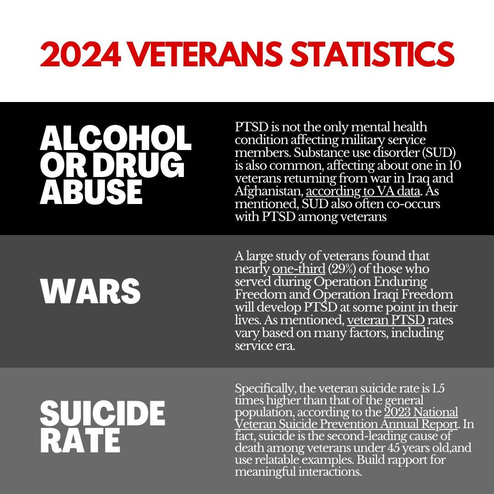

In 2023 alone, there were 2,463 drug overdoses in Virginia.Out of these deaths, 79% of them were from opioids. Also, in 2023 there were 21,881 drug overdoses in Virginia that required emergency department visits. Those who serve in the military are susceptible to mental health disorders, such as depression anxiety, and suicidality.
Evidence has shown that anxiety and depression can increase the mortality and morbidity risk during the use of opioids. Suicide is a just one of the many mental health issues among military veterans, especially those who served in Afghanistan or Iraq. Military individuals, depending on position and or ranking have different experiences in the service.
Studies have shown a high correlation between suicide, substance abuse in the non-military populations. In the veteran populations, suicide is directly linked to opioid use. Veterans with opioid use disorder have increased rates of depression, anxiety,PTSD, OCD, panic disorder, bipolar disorder, ASPD, borderline personality disorder, ADHD, psychotic disorders, and schizophrenia.
There are a mulititude of factors that contribute to why combat veterans fall victim to opioid addiction. I would primarily like to shift the focus onto the root causes of addiction and how this crisis can be improved upon to combat opioid misuse in this population.